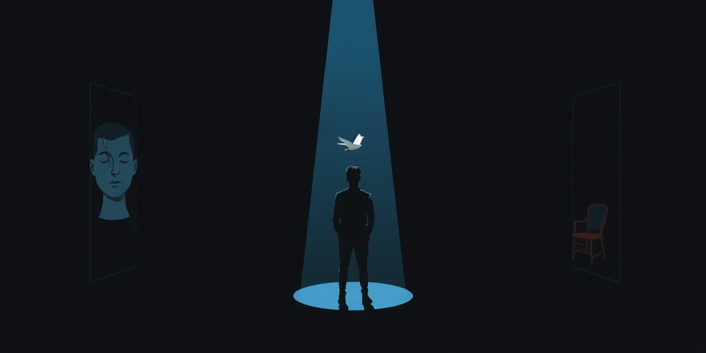

小汪老师的成长洞察 · 属于你的成长专栏
你以为你在直接面对世界，其实你面对的，永远是一张精心设计的脸。你的人生，早就被无数个看不见的「接口」接管了。
每天早晨，你用指纹解锁手机。你觉得自己在和一部机器互动。错了。你触碰的是一个接口。屏幕后面，是几千名工程师写的代码、是云服务器、是复杂的算法。你不需要知道这些。你只需要那个「滑动解锁」的动作。
这和一百年前的人拧开家里的电灯开关，没有本质区别。你不需要懂发电厂如何运转，你只需要那个开关。开关，就是一个古老的接口。它把背后的复杂，封装成一个简单的动作。理工科只是给这种结构起了个名字，叫「接口」。但这个结构，人类用了几千年。
中文里有个词，比任何技术术语都精准——「面子」。面子是什么？就是一个人对外呈现的那张稳定的、可预期的脸。它是一套契约：你尊重我的面子，我维护你的。我们在社会交往中传递的，不是赤裸裸的内心，而是这张被管理过的「脸」。
社会学家戈夫曼说，人有「前台」和「后台」。你在公司里的职业形象，就是一个前台接口。你把疲惫、焦虑、私心都藏在后台。客户和同事只需要跟你的「职业界面」打交道。这正是接口的核心功能：信息隐藏。你展示了什么，比你是什么，更影响你的人际关系。丢面子，就是你的接口当众崩溃，后台的混乱暴露在了所有人面前。
接口最厉害的地方，在于让你感觉不到它是接口。最光滑的界面，会让你误以为自己直接接触了本质。你走进一家装修简约的咖啡馆，点一杯手冲咖啡。你以为你体验的是「咖啡文化」。其实你体验的是一整套接口设计：菜单是选择接口，价格是契约，服务流程是协议。咖啡豆从哪里来、烘焙师的心情如何、供应链的成本波动，这些都被完美地隐藏了。
这正是意识形态最擅长的手法。它把一套人为建构的秩序，伪装成「自然而然」的世界。官僚系统是登峰造极的接口设计。你面对的是一个微笑的办事员、一张清晰的表格。你永远触碰不到背后那个真正做决定、真正负责的「身体」。你的愤怒找不到对象，只能消耗在表格和流程里。接口，成了稀释责任的完美工具。

仔细想想，你的生活被多少层接口包裹？你的职业身份是一层，你的社会角色是一层，你的人设又是一层。每一层都在替你筛选信息、替你做出反应、替你维持一种稳定的「输出」。久而久之，你可能会混淆：哪一个才是真正的「我」？是那个在父母面前孝顺的接口，还是在伴侣面前温柔的接口，或是在职场上雷厉风行的接口？
或许，根本没有一个固定的「真我」在后面。我们就是一个由多重接口动态组装而成的系统。这未必是坏事。接口让我们能在不同场景里灵活切换，保护内心的复杂与脆弱不被随意穿透。问题在于，我们是否意识到了接口的存在，以及，我们是否在盲目地维护着那些早已过时、甚至伤害自己的接口？
写给你的话
下次，当你觉得一段关系很「顺畅」，或者一个系统很「好用」时，试着去想：是什么东西被隐藏了？顺畅的代价是什么？
真正成熟的思考，不是看穿别人的接口，而是看清自己身上，有哪些接口是主动选择的，哪些是被强加的。我们既是使用者，也可以成为设计者。
参考资料
[1] Psychology suggests adults who leave parties without long goodbyes aren’t rude: They’re protecting the social energy they still need after the room stops watching (The Economic Times) https://economictimes.indiatimes.com/news/international/us/psychology-suggests-adults-who-leave-parties-without-long-goodbyes-arent-rude-theyre-protecting-the-social-energy-they-still-need-after-the-room-stops-watching/articleshow/131422150.cms
[2] Why do smart investors still lose money? Bernard Baruch’s guide to investing discipline (The Economic Times) https://economictimes.indiatimes.com/markets/stocks/news/why-do-smart-investors-still-lose-money-bernard-baruchs-guide-to-investing-discipline/articleshow/131418435.cms
小汪老师的成长洞察 · 属于你的成长专栏